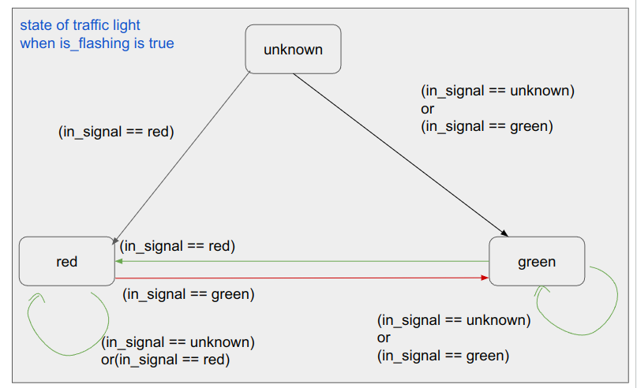

autoware_crosswalk_traffic_light_estimator#
Purpose#
autoware_crosswalk_traffic_light_estimator estimates pedestrian traffic signals which can be summarized as the following two tasks:
- Estimate pedestrian traffic signals that are not subject to be detected by perception pipeline.
- Estimate whether pedestrian traffic signals are flashing and modify the result.
Inputs / Outputs#
Input#
| Name | Type | Description |
|---|---|---|
~/input/vector_map |
autoware_map_msgs::msg::LaneletMapBin | vector map |
~/input/classified/traffic_signals |
autoware_perception_msgs::msg::TrafficLightGroupArray | classified signals |
Output#
| Name | Type | Description |
|---|---|---|
~/output/traffic_signals |
autoware_perception_msgs::msg::TrafficLightGroupArray | output that contains estimated pedestrian traffic signals |
~/debug/processing_time_ms |
autoware_internal_debug_msgs::msg::Float64Stamped | pipeline latency time (ms) |
Parameters#
| Name | Type | Description | Default value |
|---|---|---|---|
use_last_detect_color |
bool | If this parameter is true, this module estimates pedestrian's traffic signal as RED not only when vehicle's traffic signal is detected as GREEN/AMBER but also when detection results change GREEN/AMBER to UNKNOWN. (If detection results change RED or AMBER to UNKNOWN, this module estimates pedestrian's traffic signal as UNKNOWN.) If this parameter is false, this module use only latest detection results for estimation. (Only when the detection result is GREEN/AMBER, this module estimates pedestrian's traffic signal as RED.) |
true |
use_pedestrian_signal_detect |
bool | If this parameter is true, use the pedestrian's traffic signal estimated by the perception pipeline. If false, overwrite it with pedestrian's signals estimated from vehicle traffic signals and HDMap. |
true |
last_detect_color_hold_time |
double | The time threshold to hold for last detect color. The unit is second. | 2.0 |
last_colors_hold_time |
double | The time threshold to hold for history detected pedestrian traffic light color. The unit is second. | 1.0 |
Inner-workings / Algorithms#
When the pedestrian traffic signals are detected by perception pipeline
- If estimates the pedestrian traffic signals are flashing, overwrite the results
- Prefer the output from perception pipeline, but overwrite it if the pedestrian traffic signals are invalid(
no detection,backlight, orocclusion)
When the pedestrian traffic signals are NOT detected by perception pipeline
- Estimate the color of pedestrian traffic signals based on detected vehicle traffic signals and HDMap
Override rules specific to some traffic lights can also be defined in the lanelet map. In that case, the crosswalk traffic light estimation is overridden by these rules.
Estimate whether pedestrian traffic signals are flashing#
plantumul
start
if (the pedestrian traffic light classification result exists)then
: update the flashing flag according to the classification result(in_signal) and last_signals
if (the traffic light is flashing?)then(yes)
: update the traffic light state
else(no)
: the traffic light state is the same with the classification result
if (the classification result not exists)
: the traffic light state is the same with the estimation
: output the current traffic light state
end
Update flashing flag#

Update traffic light status#

Estimate the color of pedestrian traffic signals#
![uml diagram]()
If traffic between pedestrians and vehicles is controlled by traffic signals, the crosswalk traffic signal maybe RED in order to prevent pedestrian from crossing when the following conditions are satisfied.
Situation1#
- crosswalk conflicts STRAIGHT lanelet
- the lanelet refers GREEN or AMBER traffic signal (The following pictures show only GREEN case)


Situation2#
- crosswalk conflicts different turn direction lanelets (STRAIGHT and LEFT, LEFT and RIGHT, RIGHT and STRAIGHT)
- the lanelets refer GREEN or AMBER traffic signal (The following pictures show only GREEN case)

Map-based estimation rules#
Rules can be defined in the lanelet map to override the normal estimation. These rules define the value of a crosswalk traffic light based on the value of a vehicle traffic light.
For example, a rule to consider the crosswalk traffic light with id X to be green when the vehicle traffic light with id Y is red can be expressed in the lanelet map as follows:
XML
<relation id="Y">
...
<tag k="signal_color_relation:red:green" v="X"/>
Colors green, amber, red, and white are currently supported.
Multiple crosswalk ids can be listed separated by a comma and without any whitespace (e.g., v="1,2,3").